02 / 07
Museo de Colonia
Identity and wayfinding for a nine-site museum in Colonia del Sacramento. For now, the research stage.
- Year
- 2026 In progress
- Context
- 6th semester final project, UDE
- Role
- Research, identity and wayfinding
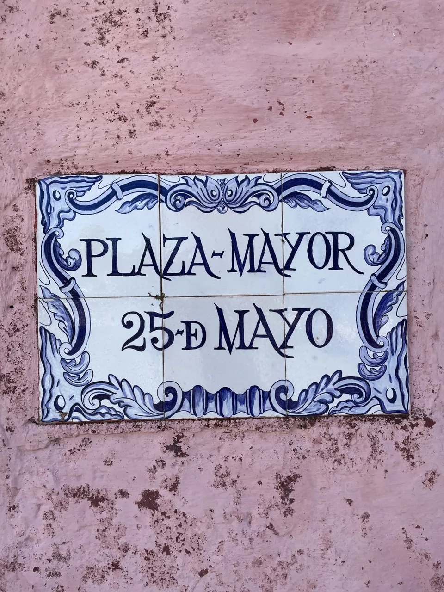
The Museo de Colonia brings together nine municipal sites, eight in the Historic Quarter and one in Real de San Carlos, under one management and one ticket. It is an institution with a system problem, not an image problem. The thesis: the concept stays (a single museum, the museum of the city) and the identity is redesigned. This is the first stage: the interview with the coordination team, a survey of five sites and an analysis of what exists today.
- Sites
- Nine, one ticket
- Interview
- 63 minutes with the coordination team
- Survey
- Five sites, 190 photos
- Delivery
- December 2026
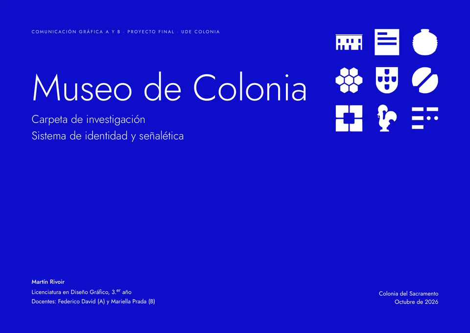
A single museum
The merger wasn't a communication decision: it answered the museums law, since several sites don't qualify as a museum on their own. The model was the Museu de Lisboa. Inside the museum there are no branches or hubs: there are spaces.
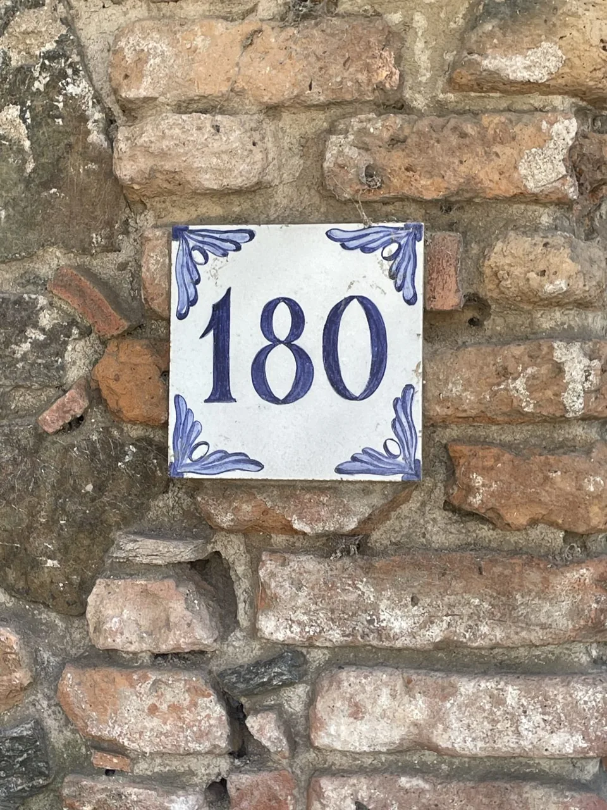
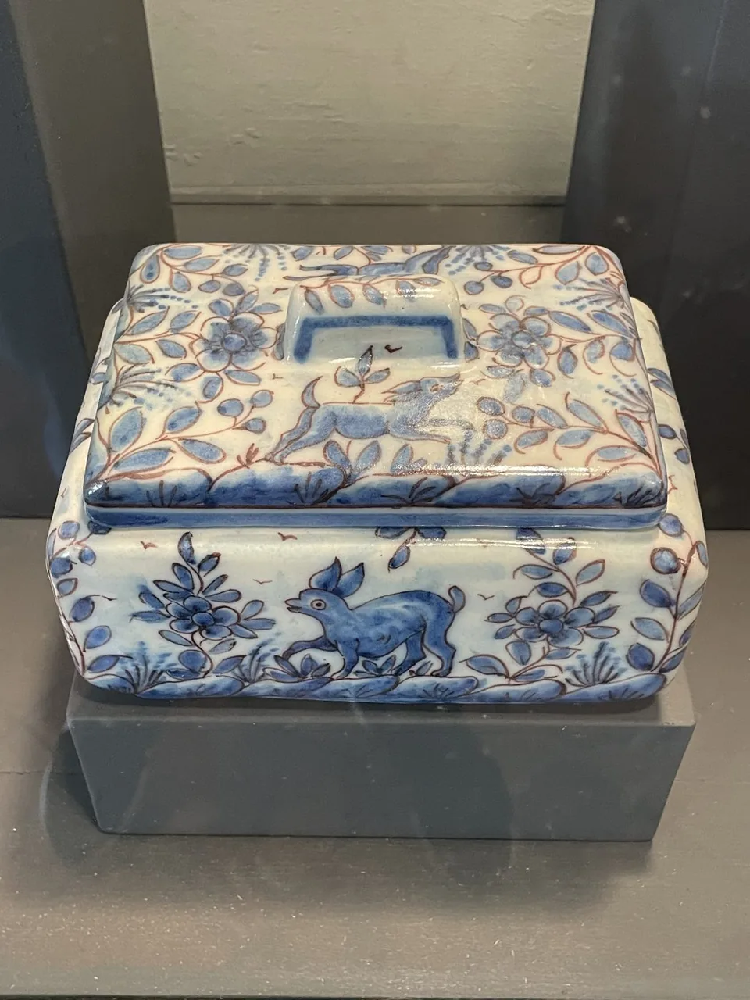
Survey
The project's world isn't found elsewhere: it's in the display cases and the façades of the quarter. The city already signs itself in tiles, and each museum icon stands for a real object in the collection.
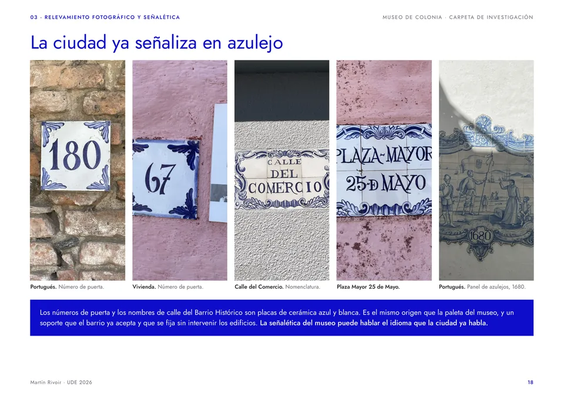
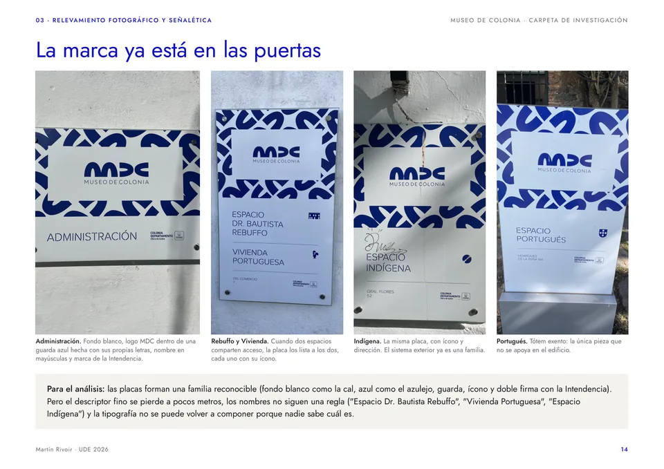
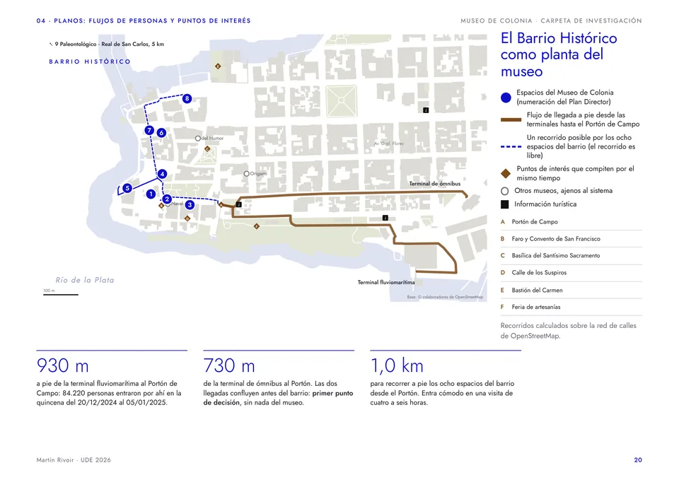
The concept stays; the identity is redesigned.
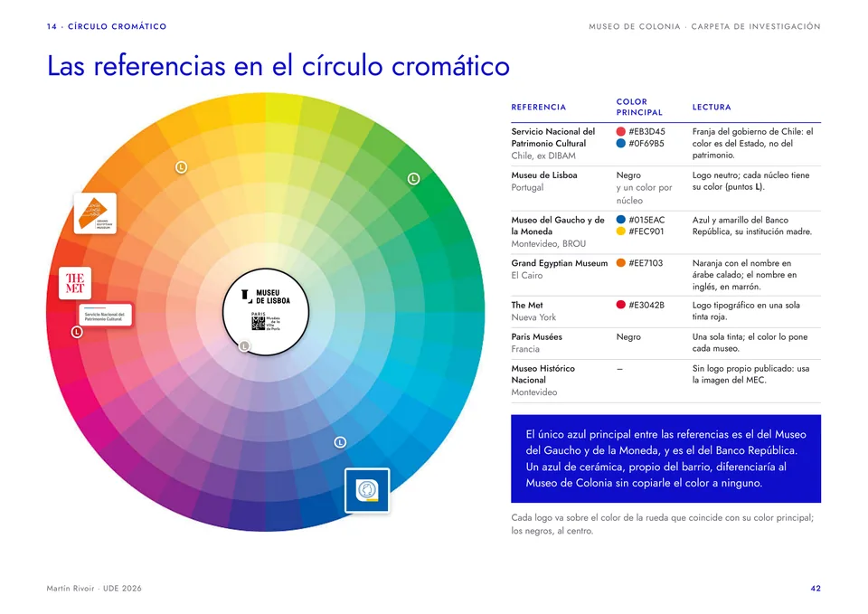
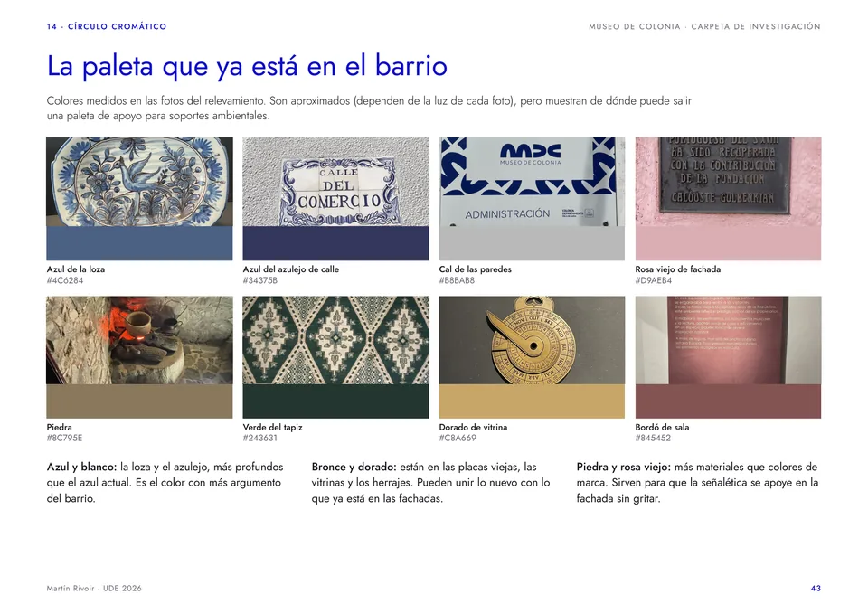
Moodboard
Faience blue, lime, stone and bronze. Every photo comes from my own survey on October 4.
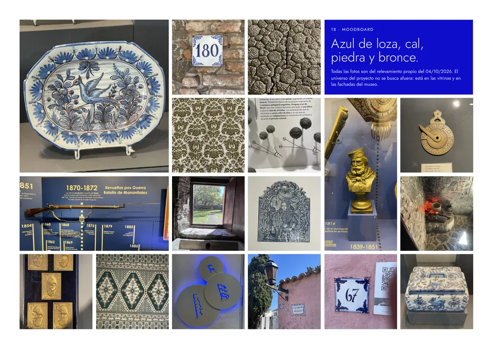
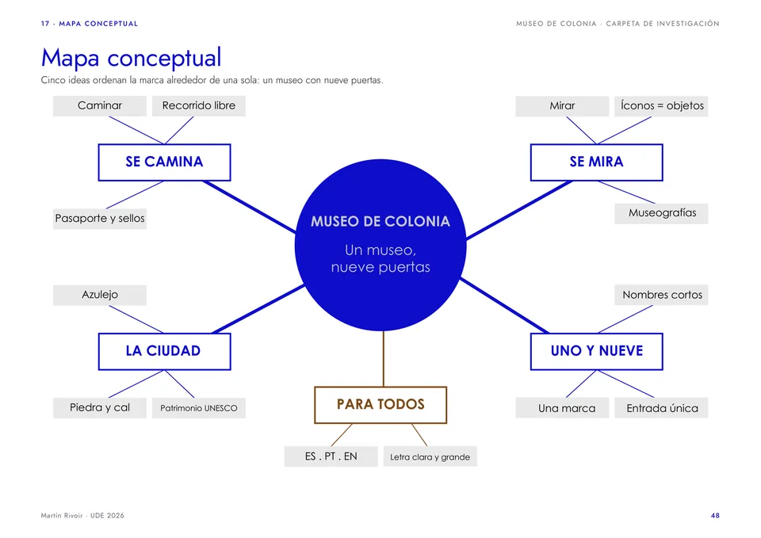
What comes next
A new logo and identity, an icon family tested for comprehension, wayfinding on four levels and a passport to visit the nine sites.